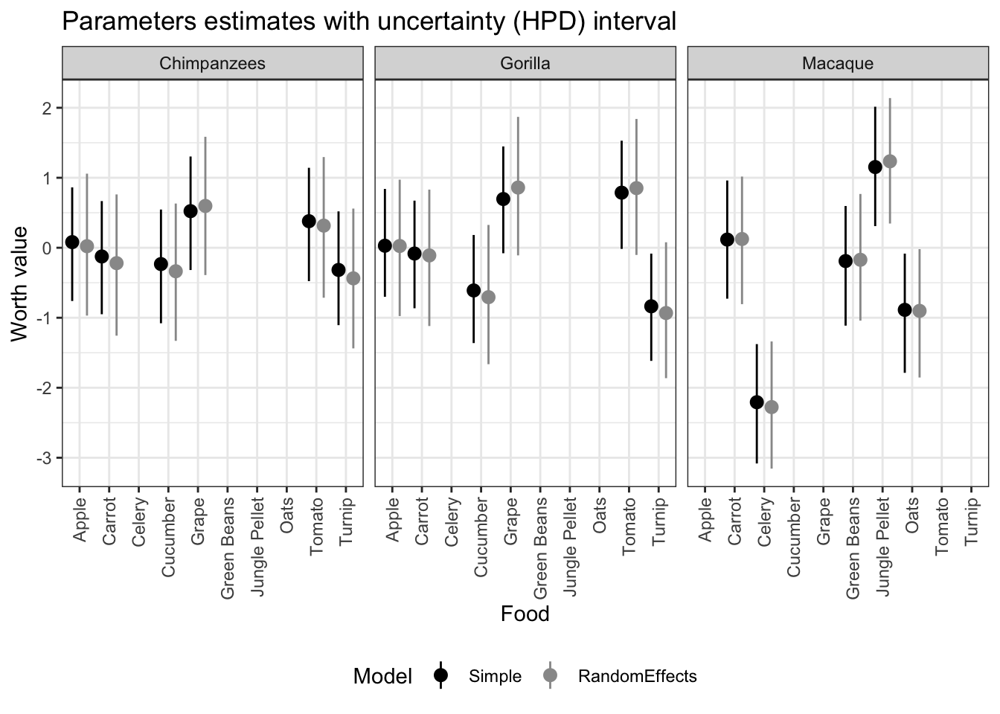

Chapter 4 Re-analysis 2
This reanalysis is based on the paper:
Huskisson, S.M., Jacobson, S.L., Egelkamp, C.L. et al. Using a Touchscreen Paradigm to Evaluate Food Preferences and Response to Novel Photographic Stimuli of Food in Three Primate Species (Gorilla gorilla gorilla, Pan troglodytes, and Macaca fuscata). Int J Primatol 41, 5–23 (2020). https://doi.org/10.1007/s10764-020-00131-0
library(bpcs)
library(tidyverse)
library(knitr)
options(mc.cores = parallel::detectCores())
rstan::rstan_options(auto_write = TRUE)
set.seed(99)4.1 Importing the data
The data from this paper was made available upon request and below we exemplify a few rows of how the original dataset looks like
Previewing how the data looks like
dplyr::sample_n(d, size = 10) %>%
knitr::kable(caption='Sample of how the dataset looks like') %>%
kableExtra::kable_styling(bootstrap_options = c("striped", "hover", "condensed", "responsive")) %>%
kableExtra::scroll_box(width = "100%")| date | species_type | SubjectCode | Sex | Trial | image1 | image2 | image_chosen | concat_test_name |
|---|---|---|---|---|---|---|---|---|
| 10/12/17 | Gorilla | Gorilla1 | Male | 2 | Ap | Cu | Ap | ApCu |
| 8/31/17 | Gorilla | Gorilla3 | Male | 16 | Ca | To | To | CaTo |
| 8/16/17 | Gorilla | Gorilla5 | Female | 16 | Cu | Gr | Cu | CuGr |
| 11/13/17 | Chimpanzee | Chimpanzee3 | Female | 14 | Ap | Ca | Ca | ApCa |
| 4/11/17 | Gorilla | Gorilla3 | Male | 15 | Ca | Cu | Ca | CaCu |
| 1/22/18 | Macaque | Macaque7 | Female | 1 | Ca | Pe | Pe | CaPe |
| 1/5/17 | Gorilla | Gorilla4 | Male | 28 | Ca | Tu | Tu | CaTu |
| 3/3/17 | Chimpanzee | Chimpanzee1 | Female | 19 | Cu | Gr | Gr | CuGr |
| 12/4/17 | Chimpanzee | Chimpanzee1 | Female | 27 | Ap | Tu | Tu | ApTu |
| 5/1/17 | Gorilla | Gorilla6 | Male | 14 | Ca | Tu | Ca | CaTu |
Now we need to modify a bit the data frame to create a column with the results as 0 and 1.
Creating a numerical result vector with 0 for image1 and 1 for image2
Adding names to the abbreviations
#image1
d$image1 <- dplyr::recode(d$image1, "Ca" = 'Carrot')
d$image1 <- dplyr::recode(d$image1, "Cu" = 'Cucumber')
d$image1 <- dplyr::recode(d$image1, "Tu" = 'Turnip')
d$image1 <- dplyr::recode(d$image1, "Gr" = 'Grape')
d$image1 <- dplyr::recode(d$image1, "To" = 'Tomato')
d$image1 <- dplyr::recode(d$image1, "Ap" = 'Apple')
d$image1 <- dplyr::recode(d$image1, "Jp" = 'Jungle Pellet')
d$image1 <- dplyr::recode(d$image1, "Ce" = 'Celery')
d$image1 <- dplyr::recode(d$image1, "Gb" = 'Green Beans')
d$image1 <- dplyr::recode(d$image1, "Oa" = 'Oats')
d$image1 <- dplyr::recode(d$image1, "Pe" = 'Peanuts')
#image2
d$image2 <- dplyr::recode(d$image2, "Ca" = 'Carrot')
d$image2 <- dplyr::recode(d$image2, "Cu" = 'Cucumber')
d$image2 <- dplyr::recode(d$image2, "Tu" = 'Turnip')
d$image2 <- dplyr::recode(d$image2, "Gr" = 'Grape')
d$image2 <- dplyr::recode(d$image2, "To" = 'Tomato')
d$image2 <- dplyr::recode(d$image2, "Ap" = 'Apple')
d$image2 <- dplyr::recode(d$image2, "Jp" = 'Jungle Pellet')
d$image2 <- dplyr::recode(d$image2, "Ce" = 'Celery')
d$image2 <- dplyr::recode(d$image2, "Gb" = 'Green Beans')
d$image2 <- dplyr::recode(d$image2, "Oa" = 'Oats')
d$image2 <- dplyr::recode(d$image2, "Pe" = 'Peanuts')Separating the data into three datasets. One for each species.
macaque <- d %>%
dplyr::filter(species_type=='Macaque')
chip <- d %>%
dplyr::filter(species_type=='Chimpanzee')
gor <- d %>%
dplyr::filter(species_type=='Gorilla')Below we show a few lines of each dataset:
dplyr::sample_n(gor, size = 10) %>%
knitr::kable(caption='Sample of how the gorilla dataset looks like') %>%
kableExtra::kable_styling(bootstrap_options = c("striped", "hover", "condensed", "responsive")) %>%
kableExtra::scroll_box(width = "100%")| date | species_type | SubjectCode | Sex | Trial | image1 | image2 | image_chosen | concat_test_name | y |
|---|---|---|---|---|---|---|---|---|---|
| 3/3/17 | Gorilla | Gorilla2 | Male | 31 | Cucumber | Tomato | To | CuTo | 1 |
| 11/8/17 | Gorilla | Gorilla6 | Male | 6 | Tomato | Turnip | To | ToTu | 0 |
| 3/20/17 | Gorilla | Gorilla2 | Male | 6 | Grape | Tomato | To | GrTo | 1 |
| 3/8/17 | Gorilla | Gorilla6 | Male | 20 | Carrot | Grape | Ca | CaGr | 0 |
| 8/23/17 | Gorilla | Gorilla5 | Female | 4 | Cucumber | Grape | Cu | CuGr | 0 |
| 5/25/17 | Gorilla | Gorilla4 | Male | 19 | Carrot | Cucumber | Ca | CaCu | 0 |
| 8/3/17 | Gorilla | Gorilla6 | Male | 14 | Carrot | Tomato | To | CaTo | 1 |
| 8/23/17 | Gorilla | Gorilla5 | Female | 24 | Cucumber | Grape | Gr | CuGr | 1 |
| 12/7/16 | Gorilla | Gorilla2 | Male | 28 | Cucumber | Turnip | Cu | CuTu | 0 |
| 5/25/17 | Gorilla | Gorilla1 | Male | 4 | Carrot | Cucumber | Ca | CaCu | 0 |
dplyr::sample_n(chip, size = 10) %>%
knitr::kable(caption='Sample of how the chimpanzees dataset looks like') %>%
kableExtra::kable_styling(bootstrap_options = c("striped", "hover", "condensed", "responsive")) %>%
kableExtra::scroll_box(width = "100%")| date | species_type | SubjectCode | Sex | Trial | image1 | image2 | image_chosen | concat_test_name | y |
|---|---|---|---|---|---|---|---|---|---|
| 3/1/18 | Chimpanzee | Chimpanzee4 | Male | 3 | Apple | Carrot | Ap | ApCa | 0 |
| 12/7/17 | Chimpanzee | Chimpanzee1 | Female | 18 | Carrot | Tomato | To | CaTo | 1 |
| 4/26/17 | Chimpanzee | Chimpanzee3 | Female | 7 | Cucumber | Turnip | Cu | CuTu | 0 |
| 11/1/17 | Chimpanzee | Chimpanzee1 | Female | 19 | Apple | Grape | Gr | ApGr | 1 |
| 7/26/17 | Chimpanzee | Chimpanzee3 | Female | 20 | Cucumber | Grape | Cu | CuGr | 0 |
| 10/26/17 | Chimpanzee | Chimpanzee1 | Female | 7 | Apple | Grape | Gr | ApGr | 1 |
| 9/18/17 | Chimpanzee | Chimpanzee4 | Male | 27 | Carrot | Grape | Gr | CaGr | 1 |
| 12/8/16 | Chimpanzee | Chimpanzee1 | Female | 12 | Cucumber | Turnip | Cu | CuTu | 0 |
| 12/14/17 | Chimpanzee | Chimpanzee3 | Female | 14 | Tomato | Turnip | To | ToTu | 0 |
| 1/12/17 | Chimpanzee | Chimpanzee4 | Male | 21 | Cucumber | Turnip | Tu | CuTu | 1 |
dplyr::sample_n(macaque, size = 10) %>%
knitr::kable(caption='Sample of how the macaques dataset looks like') %>%
kableExtra::kable_styling(bootstrap_options = c("striped", "hover", "condensed", "responsive")) %>%
kableExtra::scroll_box(width = "100%")| date | species_type | SubjectCode | Sex | Trial | image1 | image2 | image_chosen | concat_test_name | y |
|---|---|---|---|---|---|---|---|---|---|
| 10/6/17 | Macaque | Macaque6 | Female | 10 | Jungle Pellet | Celery | Jp | CeJp | 0 |
| 09-06-2017@11-43 | Macaque | Macaque1 | Male | 12 | Carrot | Celery | Ca | CeCa | 0 |
| 04-30-2018@11-54 | Macaque | Macaque1 | Male | 8 | Peanuts | Oats | Pe | PeOa | 0 |
| 8/7/17 | Macaque | Macaque3 | Female | 1 | Peanuts | Celery | Ce | CePe | 1 |
| 05-04-2018@11-27 | Macaque | Macaque1 | Male | 1 | Celery | Green Beans | Gb | GbCe | 1 |
| 1/16/18 | Macaque | Macaque7 | Female | 14 | Carrot | Peanuts | Ca | CaPe | 0 |
| 04-02-2018@11-27 | Macaque | Macaque1 | Male | 28 | Carrot | Green Beans | Ca | GbCa | 0 |
| 9/7/17 | Macaque | Macaque6 | Female | 2 | Carrot | Celery | Ca | CeCa | 0 |
| 8/14/17 | Macaque | Macaque2 | Female | 14 | Carrot | Peanuts | Pe | CaPe | 1 |
| 5/24/18 | Macaque | Macaque4 | Female | 17 | Jungle Pellet | Oats | Jp | JpOa | 0 |
4.2 Simple Bradley-Terry model
Now that the data is ready let’s fit three simple Bayesian Bradley-Terry models
m1_macaque <-
bpc(
macaque,
player0 = 'image1',
player1 = 'image2',
result_column = 'y',
model_type = 'bt',
priors = list(prior_lambda_std = 1.0),
iter = 3000
)
save_bpc_model(m1_macaque, 'm1_macaque', 'fittedmodels')
m1_chip <-
bpc(
chip,
player0 = 'image1',
player1 = 'image2',
result_column = 'y',
model_type = 'bt',
priors = list(prior_lambda_std = 1.0),
iter = 3000
)
save_bpc_model(m1_chip, 'm1_chip', 'fittedmodels')
m1_gor <-
bpc(
gor,
player0 = 'image1',
player1 = 'image2',
result_column = 'y',
model_type = 'bt',
priors = list(prior_lambda_std = 1.0),
iter = 3000
)
save_bpc_model(m1_gor, 'm1_gor', 'fittedmodels')4.2.1 Assessing the fitness of the model
Here we are illustrating how to conduct the diagnostic analysis for one model only. Since the shinystan app does not appear in the compiled appendix we are just representing it here once for the Chimpanzees model. Note that it is still possible to use the bayesplot package to generate static figures if needed.
#First we get the posterior predictive in the environment
pp_m1_chip <- posterior_predictive(m1_chip, n = 100)
y_pp_m1_chip <- pp_m1_chip_gor$y
ypred_pp_m1_chip <- pp_m1_chip$y_predThen we launch shinystan to assess convergence and validity of the model
4.2.2 Getting the WAIC
Before we start getting the parameters tables and etc let’s get the WAIC so we can compare with the next model (with random effects)
##
## Computed from 8000 by 8400 log-likelihood matrix
##
## Estimate SE
## elpd_waic -3550.8 56.7
## p_waic 5.0 0.1
## waic 7101.6 113.4##
## Computed from 8000 by 5400 log-likelihood matrix
##
## Estimate SE
## elpd_waic -3599.7 17.0
## p_waic 5.1 0.0
## waic 7199.5 33.9##
## Computed from 8000 by 8100 log-likelihood matrix
##
## Estimate SE
## elpd_waic -4883.7 36.0
## p_waic 5.0 0.1
## waic 9767.4 71.94.3 Bradley-Terry model with random effects for individuals
Let’s add the cluster SubjectCode as a random effects in our model
m2_macaque <-
bpc(
macaque,
player0 = 'image1',
player1 = 'image2',
result_column = 'y',
model_type = 'bt-U',
cluster = c('SubjectCode'),
priors = list(
prior_lambda_std = 1.0,
prior_U1_std = 1.0
),
iter = 3000
)
save_bpc_model(m2_macaque, 'm2_macaque', 'fittedmodels')
m2_chip <-
bpc(
chip,
player0 = 'image1',
player1 = 'image2',
cluster = c('SubjectCode'),
result_column = 'y',
model_type = 'bt-U',
priors = list(
prior_lambda_std = 1.0,
prior_U1_std = 1.0
),
iter = 3000
)
save_bpc_model(m2_chip, 'm2_chip', 'fittedmodels')
m2_gor <-
bpc(
gor,
player0 = 'image1',
player1 = 'image2',
cluster = c('SubjectCode'),
result_column = 'y',
model_type = 'bt-U',
priors = list(
prior_lambda_std = 1.0,
prior_U1_std = 1.0
),
iter = 3000
)
save_bpc_model(m2_gor, 'm2_gor', 'fittedmodels')Of course we should run diagnostic analysis on the models. For the gorillas
4.3.1 Getting the WAIC
Before we start plotting tables let’s get the WAIC for each random effects model and compare with the first models without random effects
##
## Computed from 8000 by 8400 log-likelihood matrix
##
## Estimate SE
## elpd_waic -3356.6 57.1
## p_waic 33.0 0.8
## waic 6713.2 114.2##
## Computed from 8000 by 5400 log-likelihood matrix
##
## Estimate SE
## elpd_waic -3359.9 24.1
## p_waic 19.6 0.3
## waic 6719.7 48.3##
## Computed from 8000 by 8100 log-likelihood matrix
##
## Estimate SE
## elpd_waic -4396.1 40.1
## p_waic 29.2 0.4
## waic 8792.2 80.2Below I just copied the result of the WAIC into a data frame to create the tables. Of course this process could be automated.
waic_table <-
data.frame(
Species = c('Macaques', 'Chimpanzees', 'Gorillas'),
BT = c(7101.6, 7199.5, 9767.4),
BTU = c(6713.2, 6719.7, 8792.2)
)The kableExtra package provides some nice tools to create tables from R directly to Latex
kable(
waic_table, booktabs=T,
caption = 'Comparison of the WAIC of the Bradley-Terry model and the Bradley-Terry model with random effects on the subjects for each specie',
col.names = c('Specie', 'Bradley-Terry', 'Bradley-Terry with random effects')
) %>%
kableExtra::add_header_above(c(" " = 1, "WAIC" = 2)) %>%
kableExtra::kable_styling(bootstrap_options = c("striped", "hover", "condensed", "responsive")) %>%
kableExtra::scroll_box(width = "100%")| Specie | Bradley-Terry | Bradley-Terry with random effects |
|---|---|---|
| Macaques | 7101.6 | 6713.2 |
| Chimpanzees | 7199.5 | 6719.7 |
| Gorillas | 9767.4 | 8792.2 |
We can see that the random effects model perform much better than the simple BT model by having a much lower WAIC. Therefore from now we will use only the random effects model to generate our tables and plots
4.3.2 Parameter tables and plots
Now let’s create some plots and tables to analyze and compare the models
4.3.2.1 Parameters table
Creating a nice table of the parameters.
First let’s put all species in the same data frame
df1 <- get_parameters(m2_macaque, n_eff = F)
df2 <- get_parameters(m2_chip, n_eff = F)
df3 <- get_parameters(m2_gor, n_eff = F)
df1 <- df1 %>% dplyr::mutate(Species='Macaque')
df2 <- df2 %>% dplyr::mutate(Species='Chimpanzees')
df3 <- df3 %>% dplyr::mutate(Species='Gorilla')
#appending the dataframes
df <- rbind(df1,df2,df3)
#Removing the individual random effects parameters otherwise the table will be much bigger
df <- df %>%
filter(!startsWith(Parameter,'U1['))
#Re-coding the parameters (removing the lambda) so it reads nicer in the table.
df$Parameter <- dplyr::recode(df$Parameter, 'lambda[Carrot]'='Carrot')
df$Parameter <- dplyr::recode(df$Parameter, 'lambda[Grape]'='Grape')
df$Parameter <- dplyr::recode(df$Parameter, 'lambda[Turnip]'='Turnip')
df$Parameter <- dplyr::recode(df$Parameter, 'lambda[Cucumber]'='Cucumber')
df$Parameter <- dplyr::recode(df$Parameter, 'lambda[Tomato]'='Tomato')
df$Parameter <- dplyr::recode(df$Parameter, 'lambda[Apple]'='Apple')
df$Parameter <- dplyr::recode(df$Parameter, 'lambda[Jungle Pellet]'='Jungle Pellet')
df$Parameter <- dplyr::recode(df$Parameter, 'lambda[Green Beans]'='Green Beans')
df$Parameter <- dplyr::recode(df$Parameter, 'lambda[Celery]'='Celery')
df$Parameter <- dplyr::recode(df$Parameter, 'lambda[Oats]'='Oats')
df$Parameter <- dplyr::recode(df$Parameter, 'lambda[Peanuts]'='Peanuts')Now let’s create the table by removing the species column and adding some row Headers for the species
(df %>% select(-Species) %>%
kable( caption = 'Parameters of the model with random effects', digits = 2, col.names = c('Parameter', 'Mean', 'HPD lower', 'HPD upper')) %>%
kableExtra::kable_styling(bootstrap_options = c("striped", "hover", "condensed", "responsive")) %>%
kableExtra::pack_rows("Macaque", 1, 6) %>%
kableExtra::pack_rows("Chimpanzees", 7, 13) %>%
kableExtra::pack_rows("Gorilla", 14, 20) %>%
kableExtra::scroll_box(width = "100%")
)| Parameter | Mean | HPD lower | HPD upper |
|---|---|---|---|
| Macaque | |||
| Carrot | 0.12 | -0.81 | 1.02 |
| Celery | -2.28 | -3.16 | -1.34 |
| Jungle Pellet | 1.24 | 0.35 | 2.14 |
| Oats | -0.90 | -1.85 | -0.02 |
| Green Beans | -0.17 | -1.04 | 0.77 |
| U1_std | 0.57 | 0.42 | 0.75 |
| Chimpanzees | |||
| Apple | 0.02 | -0.97 | 1.06 |
| Tomato | 0.32 | -0.71 | 1.30 |
| Carrot | -0.22 | -1.26 | 0.76 |
| Grape | 0.60 | -0.39 | 1.59 |
| Cucumber | -0.34 | -1.33 | 0.63 |
| Turnip | -0.44 | -1.44 | 0.56 |
| U1_std | 0.72 | 0.48 | 1.00 |
| Gorilla | |||
| Apple | 0.03 | -0.98 | 0.97 |
| Carrot | -0.11 | -1.12 | 0.83 |
| Grape | 0.86 | -0.11 | 1.87 |
| Tomato | 0.85 | -0.10 | 1.84 |
| Cucumber | -0.71 | -1.66 | 0.33 |
| Turnip | -0.93 | -1.86 | 0.08 |
| U1_std | 0.79 | 0.57 | 1.02 |
4.3.2.2 Rank table
Rank of the food preferences
rank1 <- get_rank_of_players_df(m2_macaque)
rank2 <- get_rank_of_players_df(m2_chip)
rank3 <- get_rank_of_players_df(m2_gor)
#appending the dataframes
rank_all <- rbind(rank1,rank2,rank3)
#Re-coding the parameters (removing the lambda) so it reads nicer in the table.
rank_all$Parameter <- dplyr::recode(rank_all$Parameter, 'lambda[Carrot]'='Carrot')
rank_all$Parameter <- dplyr::recode(rank_all$Parameter, 'lambda[Grape]'='Grape')
rank_all$Parameter <- dplyr::recode(rank_all$Parameter, 'lambda[Turnip]'='Turnip')
rank_all$Parameter <- dplyr::recode(rank_all$Parameter, 'lambda[Cucumber]'='Cucumber')
rank_all$Parameter <- dplyr::recode(rank_all$Parameter, 'lambda[Tomato]'='Tomato')
rank_all$Parameter <- dplyr::recode(rank_all$Parameter, 'lambda[Apple]'='Apple')
rank_all$Parameter <- dplyr::recode(rank_all$Parameter, 'lambda[Jungle Pellet]'='Jungle Pellet')
rank_all$Parameter <- dplyr::recode(rank_all$Parameter, 'lambda[Green Beans]'='Green Beans')
rank_all$Parameter <- dplyr::recode(rank_all$Parameter, 'lambda[Celery]'='Celery')
rank_all$Parameter <- dplyr::recode(rank_all$Parameter, 'lambda[Oats]'='Oats')
rank_all$Parameter <- dplyr::recode(rank_all$Parameter, 'lambda[Peanuts]'='Peanuts')Now let’s create the rank table
(rank_all %>%
kable( caption = 'Ranking of the food preferences per specie with model with random effects', digits = 2, col.names = c('Food', 'Median Rank', 'Mean Rank', 'Std. Rank')) %>%
kableExtra::kable_styling(bootstrap_options = c("striped", "hover", "condensed", "responsive")) %>%
kableExtra::pack_rows("Macaque", 1, 6) %>%
kableExtra::pack_rows("Chimpanzees", 7, 12) %>%
kableExtra::pack_rows("Gorilla", 13, 18) %>%
kableExtra::scroll_box(width = "100%")
)| Food | Median Rank | Mean Rank | Std. Rank |
|---|---|---|---|
| Macaque | |||
| Peanuts | 1 | 1.01 | 0.10 |
| Jungle Pellet | 2 | 1.99 | 0.11 |
| Carrot | 3 | 3.16 | 0.37 |
| Green Beans | 4 | 3.85 | 0.38 |
| Oats | 5 | 4.99 | 0.10 |
| Celery | 6 | 6.00 | 0.00 |
| Chimpanzees | |||
| Grape | 1 | 1.53 | 0.85 |
| Tomato | 2 | 2.27 | 1.12 |
| Apple | 3 | 3.26 | 1.25 |
| Carrot | 4 | 4.24 | 1.28 |
| Cucumber | 5 | 4.70 | 1.18 |
| Turnip | 5 | 5.00 | 1.11 |
| Gorilla | |||
| Grape | 2 | 1.55 | 0.60 |
| Tomato | 2 | 1.57 | 0.61 |
| Apple | 3 | 3.38 | 0.74 |
| Carrot | 4 | 3.72 | 0.72 |
| Cucumber | 5 | 5.12 | 0.70 |
| Turnip | 6 | 5.66 | 0.56 |
4.3.2.3 Plot
Now let’s use ggplot to create a plot comparing both types of model. The simple BT and the BT with Random effects
First we need to prepare the data frames for plotting. For the simple BT model (called old)
df1_old <- get_parameters(m1_macaque, n_eff = F)
df2_old <- get_parameters(m1_chip, n_eff = F)
df3_old <- get_parameters(m1_gor, n_eff = F)
df1_old <- df1_old %>% dplyr::mutate(Species='Macaque', Model='Simple')
df2_old <- df2_old %>% dplyr::mutate(Species='Chimpanzees', Model='Simple')
df3_old <- df3_old %>% dplyr::mutate(Species='Gorilla', Model='Simple')
#appending the dataframes
df_old <- rbind(df1_old,df2_old,df3_old)
#Removing the individual random effects parameters
df_old <- df_old %>%
filter(!startsWith(Parameter,'U'))
#Re-coding some parameters so it reads nicer in the figure
df_old$Parameter <- dplyr::recode(df_old$Parameter, 'lambda[Carrot]'='Carrot')
df_old$Parameter <- dplyr::recode(df_old$Parameter, 'lambda[Grape]'='Grape')
df_old$Parameter <- dplyr::recode(df_old$Parameter, 'lambda[Turnip]'='Turnip')
df_old$Parameter <- dplyr::recode(df_old$Parameter, 'lambda[Cucumber]'='Cucumber')
df_old$Parameter <- dplyr::recode(df_old$Parameter, 'lambda[Tomato]'='Tomato')
df_old$Parameter <- dplyr::recode(df_old$Parameter, 'lambda[Apple]'='Apple')
df_old$Parameter <- dplyr::recode(df_old$Parameter, 'lambda[Jungle Pellet]'='Jungle Pellet')
df_old$Parameter <- dplyr::recode(df_old$Parameter, 'lambda[Green Beans]'='Green Beans')
df_old$Parameter <- dplyr::recode(df_old$Parameter, 'lambda[Celery]'='Celery')
df_old$Parameter <- dplyr::recode(df_old$Parameter, 'lambda[Oats]'='Oats')
df_old$Parameter <- dplyr::recode(df_old$Parameter, 'lambda[Peanuts]'='Peanuts')For the BT with random effects
df1 <- get_parameters(m2_macaque, n_eff = F)
df2 <- get_parameters(m2_chip, n_eff = F)
df3 <- get_parameters(m2_gor, n_eff = F)
df1 <- df1 %>% dplyr::mutate(Species='Macaque', Model='RandomEffects')
df2 <- df2 %>% dplyr::mutate(Species='Chimpanzees', Model='RandomEffects')
df3 <- df3 %>% dplyr::mutate(Species='Gorilla', Model='RandomEffects')
#appending the dataframes
df <- rbind(df1,df2,df3)
#Removing the individual random effects parameters
df <- df %>%
filter(!startsWith(Parameter,'U'))
#Re-coding some parameters so it reads nicer in the figure
df$Parameter <- dplyr::recode(df$Parameter, 'lambda[Carrot]'='Carrot')
df$Parameter <- dplyr::recode(df$Parameter, 'lambda[Grape]'='Grape')
df$Parameter <- dplyr::recode(df$Parameter, 'lambda[Turnip]'='Turnip')
df$Parameter <- dplyr::recode(df$Parameter, 'lambda[Cucumber]'='Cucumber')
df$Parameter <- dplyr::recode(df$Parameter, 'lambda[Tomato]'='Tomato')
df$Parameter <- dplyr::recode(df$Parameter, 'lambda[Apple]'='Apple')
df$Parameter <- dplyr::recode(df$Parameter, 'lambda[Jungle Pellet]'='Jungle Pellet')
df$Parameter <- dplyr::recode(df$Parameter, 'lambda[Green Beans]'='Green Beans')
df$Parameter <- dplyr::recode(df$Parameter, 'lambda[Celery]'='Celery')
df$Parameter <- dplyr::recode(df$Parameter, 'lambda[Oats]'='Oats')
df$Parameter <- dplyr::recode(df$Parameter, 'lambda[Peanuts]'='Peanuts')Now we can merge them in a single data frame for ggplot
#appending the dataframes
out <- rbind(df, df_old)
#To order in ggplot we need to specify the order in the levels. We want to place the first model first and the random effects second
out$Model<-factor(out$Model, levels=c('Simple','RandomEffects'))
# Defining a black-gray palette:
cbp1 <- c("#000000", "#999999")
#Using the pointrange function to define the HPD intervals
ggplot(out, aes(x=Parameter))+
geom_pointrange(aes(
ymin = HPD_lower,
ymax = HPD_higher,
y = Mean,
group=Model,
color=Model),
position=position_dodge(width=1))+ #separating the two models (so they are not plotted overlapping)
labs(title = 'Parameters estimates with uncertainty (HPD) interval',
y = 'Worth value',
x = 'Food')+
facet_grid(~Species) + #Dividing the plot into three by species
theme_bw()+ # A black and white theme
# scale_x_discrete(guide = guide_axis(n.dodge = 2)) +
theme(legend.position="bottom")+
theme(axis.text.x = element_text(angle = 90, vjust = 0.5, hjust=1))+#small adjustments to the theme
scale_colour_manual(values = cbp1) #applying the color palette
4.3.2.4 Probability of selecting a novel stimuli
We will create a the table of the predictions of selecting a novel stimuli (compared to the trained ones). This is replication of table II of the original paper (of course the results are not the same since we are using different models and estimation values)
For that, we first create a data frame of the new predictions for each species. Since our model uses random effects and we would need to specify each random effect to make the predictions we will do something slightly different. We will consider that the random effects will be zero, that is, which is equivalent to the average value of the random effects (remember that it has a mean of zero). One way to achieve this is by using the obtained coefficients in a submodel. This can be done in the bpcs package by using the model_type option.
We ask for the data frame instead of the table because we will assemble the table manually.
# Create a data frame with all the pairs of food that we want to calculate
pairs_gor <-
data.frame(
image1 = c(
'Apple',
'Apple',
'Apple',
'Apple',
'Tomato',
'Tomato',
'Tomato',
'Tomato'
),
image2 = c(
'Cucumber',
'Grape',
'Turnip',
'Carrot',
'Cucumber',
'Grape',
'Turnip',
'Carrot'
)
)
pairs_chip <-
data.frame(
image1 = c(
'Apple',
'Apple',
'Apple',
'Apple',
'Tomato',
'Tomato',
'Tomato',
'Tomato'
),
image2 = c(
'Cucumber',
'Grape',
'Turnip',
'Carrot',
'Cucumber',
'Grape',
'Turnip',
'Carrot'
)
)
pairs_macaque <-
data.frame(
image1 = c(
'Oats',
'Oats',
'Oats',
'Oats',
'Green Beans',
'Green Beans',
'Green Beans',
'Green Beans'
),
image2 = c(
'Celery',
'Jungle Pellet',
'Peanuts',
'Carrot',
'Celery',
'Jungle Pellet',
'Peanuts',
'Carrot'
)
)
prob_chip <-
get_probabilities_df(
m2_chip,
newdata = pairs_chip,
model_type = 'bt') #here we are assuming zero for the random effects
prob_macaque <-
get_probabilities_df(
m2_macaque,
newdata = pairs_macaque,
model_type = 'bt')
prob_gor <-
get_probabilities_df(
m2_gor,
newdata = pairs_gor,
model_type = 'bt')
#merging in a single df
prob_table <- rbind(prob_gor, prob_chip, prob_macaque)
#since this is a time consuming table to make let's also save it
saveRDS(prob_table, 'prob_table.RDS')Now we can create the table
prob_table <- prob_table %>%
mutate(Probability = i_beats_j,
OddsRatio = Probability / (1 - Probability))
prob_table %>%
dplyr::select(i, j, Probability, OddsRatio) %>%
kable(
caption = 'Posterior probabilities of the novel stimuli i being selected over the trained stimuli j',
booktabs = T,
digits = 2,
col.names = c('Item i', 'Item j', 'Probability', 'Odds Ratio')
) %>%
kableExtra::kable_styling(bootstrap_options = c("striped", "hover", "condensed", "responsive")) %>%
kableExtra::pack_rows("Gorilla", 1, 8) %>%
kableExtra::pack_rows("Chimpanzee", 9, 16) %>%
kableExtra::pack_rows("Macaque", 17, 24) %>%
kableExtra::scroll_box(width = "100%")| Item i | Item j | Probability | Odds Ratio |
|---|---|---|---|
| Gorilla | |||
| Apple | Cucumber | 0.78 | 3.55 |
| Apple | Grape | 0.35 | 0.54 |
| Apple | Turnip | 0.75 | 3.00 |
| Apple | Carrot | 0.57 | 1.33 |
| Tomato | Cucumber | 0.80 | 4.00 |
| Tomato | Grape | 0.48 | 0.92 |
| Tomato | Turnip | 0.79 | 3.76 |
| Tomato | Carrot | 0.69 | 2.23 |
| Chimpanzee | |||
| Apple | Cucumber | 0.64 | 1.78 |
| Apple | Grape | 0.42 | 0.72 |
| Apple | Turnip | 0.55 | 1.22 |
| Apple | Carrot | 0.51 | 1.04 |
| Tomato | Cucumber | 0.54 | 1.17 |
| Tomato | Grape | 0.37 | 0.59 |
| Tomato | Turnip | 0.69 | 2.23 |
| Tomato | Carrot | 0.64 | 1.78 |
| Macaque | |||
| Oats | Celery | 0.76 | 3.17 |
| Oats | Jungle Pellet | 0.11 | 0.12 |
| Oats | Peanuts | 0.06 | 0.06 |
| Oats | Carrot | 0.23 | 0.30 |
| Green Beans | Celery | 0.88 | 7.33 |
| Green Beans | Jungle Pellet | 0.26 | 0.35 |
| Green Beans | Peanuts | 0.10 | 0.11 |
| Green Beans | Carrot | 0.45 | 0.82 |